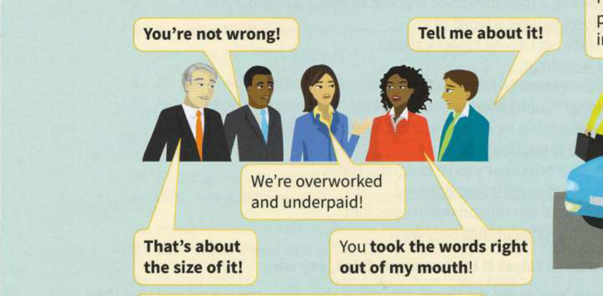
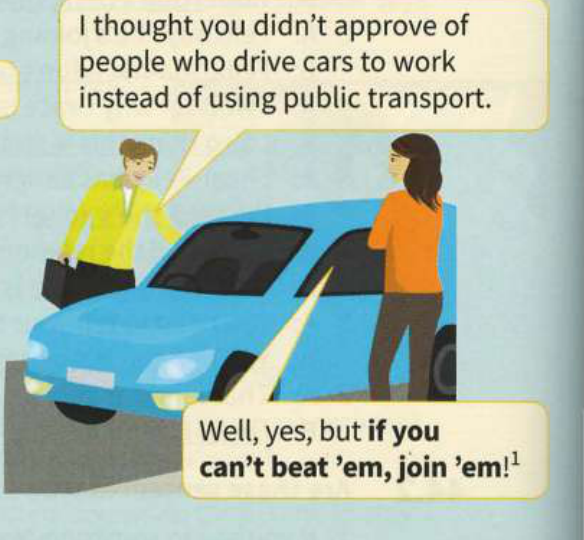

45
Agreeing and disagreeing
A
Agreeing
Maria doesn't approve of letting children eat sweets and chocolate, and her husband is of the same mind / of like mind. [has the same opinion]
The four people are all agreeing in an informal way with the woman in the centre.


1 something that you say when you decide to do something bad because other people are getting an advantage from doing it and you cannot stop them (informal)
2 support the official view of an organisation
3 saying the same things in public
B
Disagreeing
Manager: The only choice is to introduce my plan for longer working hours. It'll increase our productivity levels, which will be good for us all.
Adam: I beg to differ1. I think the staff will get very tired, and that will reduce productivity.
Manager: There's a world of difference2 between expecting people to work twelve hours a day and asking them to occasionally work ten hours, which is all I'm asking.
Adam: Ten hours and fifteen minutes actually.
Manager: Now you're just splitting hairs3.
Adam: Well, you're at odds with4 your staff on this one. Everyone thinks you're barking up the wrong tree5! They say that paying people more would be a far better way to increase productivity.
Manager: Hey, I'm not exactly a lone voice6! Joanna, you backed my plan yesterday.
Joanna: Yes, well, now I'm torn7. I'm in two minds8 as to whether it'd work or not.
Manager: Well, I'm sorry this note of discord9 has crept into our discussions. I know it's a difficult decision to make. Tom, what do you think? You're usually good at pouring oil on troubled waters10.
1 disagree (formal)
2 a big difference
3 arguing about whether unimportant details are exactly correct
4 have a different opinion from
5 trying to achieve something in the wrong way or being wrong about the reason for something (informal)
6 the only person with a specific opinion
7 I'm undecided
8 unable to decide
9 disagreement (formal)
10 calming down a difficult situation